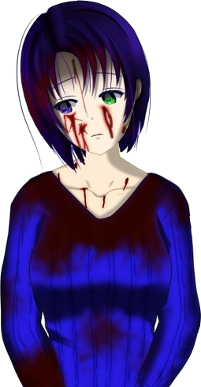
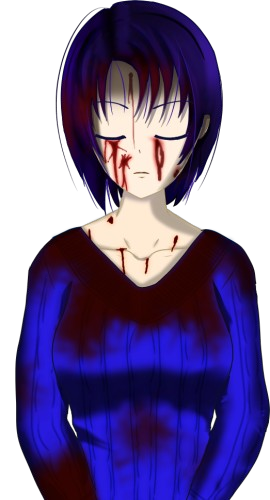
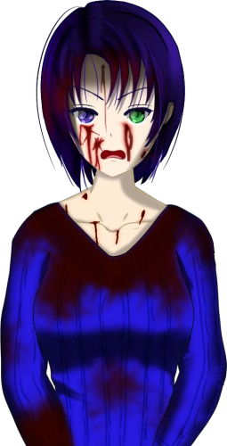
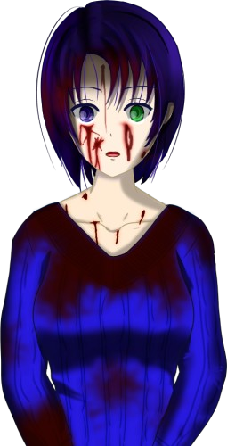

Script 00001CA0

............
It was seen...
It has been seen now...
No, it's impossible for this scenario to even appear.
............
Well...
There is no longer any point in hiding it...
This comes late, but I would like to introduce myself.
Yes, properly, by showing you my true face.

I do not know...
Nothing...
I do not know anything...!
I truly do not know!

I was restrained immediately after that.
After I registered Natsumi's death, I came back to myself and understood, for the first time, what had happened.

No... I suppose I could not understand it fully.
What I remember is being unable to accept what I had done, unable to accept that Natsumi had died...
I simply stared blankly into the air, thinking, 'What a bad dream this is. I've got to wake up, fast.'
Because...

Because it is impossible, is it not...!
Me, killing Natsumi...!
Allow me to introduce myself.
I am― Haruka Niimura.
I am― Haruka Niimura.
The same Haruka Niimura that You-sama has been watching all this time.
First, I must offer my apologies.
For using a false name all this time, for never showing my true face, and for continuing to deceive You-sama, I am deeply sorry.
As you saw, I stabbed Natsumi Kogori to death with a knife.
This is an undeniable fact, and Natsumi's blood that sprayed onto me is still soaked into my whole body, even now.
And at some point, one of my eyes had turned green.
Like Chiga-nee's, and Kana's.
I did not want to kill her, and yet I killed her.
As if a curse had been laid on me, I was tormented by an intense murderous intent toward Natsumi, took up the knife that was in the closet, and with this hand―
"Niimura-senpai, it's okay. I'm right here with you."
"No... no... I didn't kill her..."
"I know. You haven't done anything, Niimura-senpai. I'll prove it."
Mom was at the wheel, and I was on my way to the police in her car.
"No... no... I didn't kill her..."
"I know. You haven't done anything, Niimura-senpai. I'll prove it."
Mom was at the wheel, and I was on my way to the police in her car.
"Niimura-senpai, I know this is some kind of mistake.
I'm sure this is just another phenomenon that grows out of the curse-killings.
If I defend you, Niimura-senpai, you'll be found innocent."
Goto said so, but whether I was guilty or innocent didn't matter to me at all.
Goto said so, but whether I was guilty or innocent didn't matter to me at all.
Natsumi's death was a fact more unbearable than anything.
And the one who caused it was none other than me.
And the one who caused it was none other than me.
I didn't want to accept this fact.
I didn't want to accept what I'd done.
I didn't want to accept any of it.
I didn't want to accept the world I lived in.
From the world I lived in― I wanted to walk away.
I didn't want to accept what I'd done.
I didn't want to accept any of it.
I didn't want to accept the world I lived in.
From the world I lived in― I wanted to walk away.
At the end of a powerful denial, I found myself alone in this world.
The result of denying the facts so strongly and trying to escape them―
this world took shape, and I fled into it.
This is a world that came into being so that I could escape what I had done and the death of Natsumi.
But in this world, I learned something.
Just how much of a miracle the path I had walked had been.
In any other ending, an incident occurred on April 8, whatever the year, and it all ended in misery.
For a while, here in this world, I looked back on that miraculous path.
I savored how happy a road I had walked right up until I stabbed Natsumi to death, and I was filled, just a little, by that happiness full of empty show.
But it was only natural that emptiness would come over me before long.
Looking back on such things alone is only hollow.
That being so, I wanted someone who would watch the happy ending together with me.
I thought that someone who was not of the world I had lived in, someone with no connection to that world, would surely rejoice in the happy ending with me, purely.
And the first to arrive was You-sama.
Calling myself a guide, I went back over this miraculous path together with You-sama.
Growing up with my best friend, in time learning that we were sisters, living in fortunate surroundings, I avoid the tragedy and arrive at a happy ending.
I wanted someone I could share this happiness with.
Rather than going back over it hollowly on my own, I wanted someone I could share a happy ending with, like this.
Purely for that self-satisfaction of mine, I have had You-sama keep me company. I am sorry.
I do not know. That it would come to this... I never imagined that the secret I was hiding would be found out.
Honestly, I do not know either.
My will is already beginning to lose its hold.
Against my will, a scenario like that appeared.
This is the first time my control has failed in this world.
No, now that I think about it...
A few times, against my will, there were several scenes that made no sense, were there not?
Do you remember?
For example, in the last scenario of the Meicho Arc, my father, Eiichiro Niimura, who should have been dead, appeared―
At the end of the Jusatsu Arc's 'Infection,' even Erina Goto awakened to precognition―
In the Shigatsu Arc's 'I Came to See You.', Sakura Niimura, who should have been dead, appeared before Erina Goto―
Like this, endings I did not foresee occurred, and I answered on the spot, 'You-sama has no need to know,' but...
Somehow, I knew.
That in You-sama, the will to know the truth was steadily welling up.
That in answer to that will, this world had begun, little by little, to change its shape.
I believe it is surely You-sama's desire to know the truth that is moving this world.
This world is becoming a world that reflects not only my will, but You-sama's will as well.
And that will has even dragged into the light the fact I kept hiding: 'I stabbed Natsumi to death.'
It seems this world changes its shape at the slightest thing.
Perhaps so.
The truth of that incident is still far out of sight.
If this world means to show all of it to us―
............!

Just as I thought. This world is about to expand even further.
This world has begun to answer You-sama's desire to know the truth, and the truth that stayed hidden for so long is about to appear before our eyes.
But that world is surely far too vast, and far too complex.
You-sama, I believe that a path vaster and harder to fathom than ever before awaits you, if you are to know the truth.
A truth so huge and so black that the stories so far are a mere prologue, nothing more than the tip of the iceberg.
That is about to appear before us.
Even so...
Even so, do you wish to know the truth?
That is why, from here on, this world's shape will more and more―
............? Just now, I felt as if You-sama had suddenly vanished...
Then I will ask once more. Do you truly wish to know the truth?
Understood.
I no longer have anything I wish to hide.
The rest is as You-sama wishes―
............!
You-sama, it is beginning!
This world is about to change more drastically than ever before!
This is―
the Jusatsu Arc, the first arc you watched.
It seems great changes are occurring in each of its endings.
Now, let us see for ourselves what kind of changes take place.
Overall progress: …%...
Having come this far, this is still all that we have learned.
It seems this world has expanded far more than I imagined.
As long as You-sama seeks to know the truth, I will go on supporting You-sama, just as before.
However, the newly appeared scenarios are all of an extraordinary length.
Their dates and times are unknown, too. Could that be the effect of the long-hidden truth bursting forth all at once?
I will record these long scenarios as checkpoints at suitable places, so I hope you will proceed at ease, without tensing up.
Once you have passed a checkpoint, you may close this world as before and still start again from where you left off.
Now, this world exists for You-sama.
From here, please confirm the truth with your own eyes.